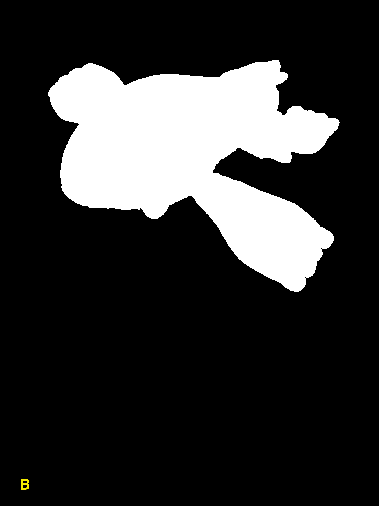
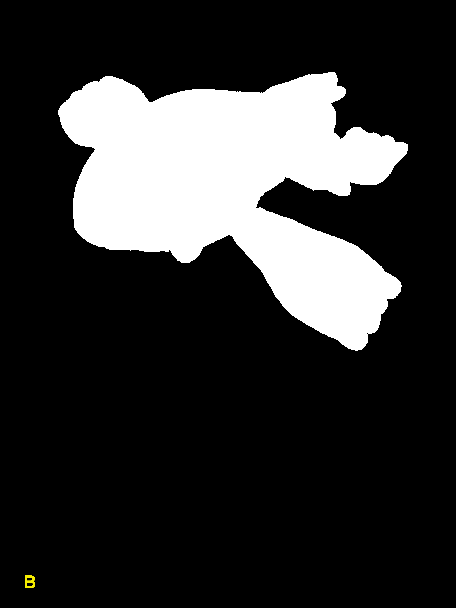
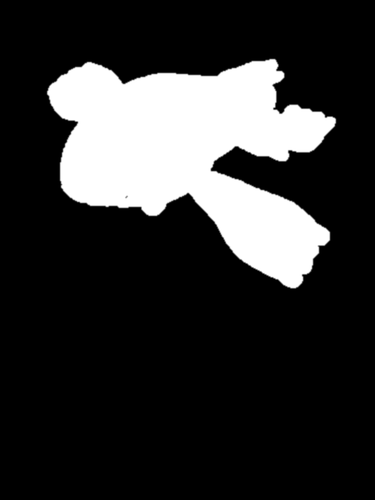
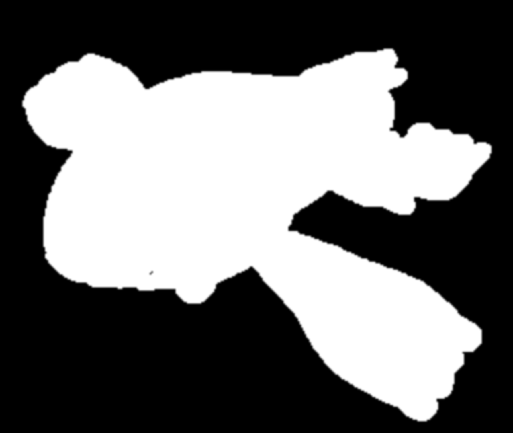
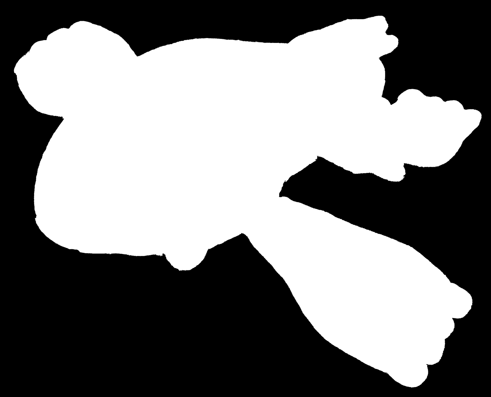

Optimized Foreground Extraction
What it does
This project implements an algorithm that can classify pixels in an image as either the foreground, or the background of the image. The algorithm builds on top of the GrabCut algorithm and is optimized to run on high resolution images. The research behind the GrabCut algorithm can be found here.
We mark the 12-Megapixel source image (left) with foreground seeds (green) and background seeds (red) to guide the algorithm. We are telling the algorithm that the pixels marked in green are guaranteed to be a part of the foreground and that the pixels marked in red are guaranteed to be a part of the background and it is up to the algorithm to figure out the rest. The algorithm outputs a mask (middle) where white pixels indicate foreground pixels and black pixels indicate background pixels. We use the mask to produce the segmented object (right).
 

Running the GrabCut algorithm on the 12-Megapixel (3024 x 4032) image takes an average of 73 seconds on a 2.7GhZ Quad Core i7 MacBook Pro, the output is shown below. Running the optimized algorithm takes an average of 3.5 seconds on the same machine.
How it works
The algorithm is broken down into two steps, the first step is to obtain a rough mask of the object by using the GrabCut algorithm on a downsampled version of the image, then upsampling the result back into the image's original resolution, and the second step is to refine the mask. The output of the first step (left) and a close up of the output (right) which outlines the rough edges is shown below.


To refine the mask, first we refine the foreground and background seeds for the image. This can be done by finding the contours of the eroded and dilated versions of the rough mask. The refined foreground seed (green), the refined background seed (blue), and the contour of the rough mask (red) are shown below.

Next, we inspect overlapping patches along the contour of the rough mask and classify each pixel in the patch as either foreground or background with the help of the refined seeds. In the patch, some pixels will be marked by the foreground seed and some by the background seed, our job is to classify all unmarked pixels based on two metrics, difference in color intensity and difference in location.
First we find the average color intensity of all the foreground seeded pixels and the average color intensity of all the background seeded pixels in the patch, then we look at each unmarked pixel in the patch and determine whether it is closer the foreground color or background color in the RGB color space. Next, we cluster the foreground and background pixels, find their centers, and look at each unmarked pixel and determine whether it is closer to the foreground or background in the image space. We take these two metrics and add them up to determine the total distance (in terms of color and location) between the pixel and either class, and finally we assign the pixel to the class with the smaller distance.
To speed up computation, four threads are spawned to allow concurrent processing. The result of the refinement step (left) and its closeup (right) are shown below.
